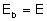

|
|||
|
| • Mechanika » Kinematyka, Dynamika, Praca, moc, energia, Grawitacja, Ruch obrotowy, Statyka, Relatywistyka • Fizyka molekularna i ciepło » Termodynamika, Gazy, Ciecze, Ciała stałe • Elektryczność i magnetyzm » Elektrostatyka, Pole elektrostatyczne, Prąd elektryczny stały, Magnetyzm, Elektromagnetyzm • Zjawiska falowe » Ruch drgający i falowy, Akustyka, Drgania i fale elektromagnetyczne, Optyka • Elementy fizyki wpółczesnej » Dualizm korpuskularno-falowy, Fizyka atomowa, Fizyka jądrowa • Astronomia » Astronomia • Zagadnienia matematyczne » Wektory, Pochodna funkcji, Logarytmy • Tablice » Jednostki wielkości fizycznych, Właściwości fizyczne, Właściwości elektromagnetyczne i falowe, Stałe fizyczne, Tablice matematyczne • O stronie » Autorzy, Bibliografia | |
|
|
W poprzednim dziale (elektrostatyka) mówiliśmy o ładunkach umieszczonych na przewodnikach, ale na takich, które są odizolowane od otoczenia. W temacie o prądzie elektrycznym zajmiemy się przewodnikiem, na końcach którego występuje różnica potencjałów. Mówimy wówczas, że na końce przewodnika przyłożone jest napięcie.
Prąd może płynąć w przewodnikach (metale), w półprzewodnikach, a także w cieczach (elektrolitach) i gazach. My zajmować się będziemy prądem w przewodnikach. Wiemy, że w metalach jedynymi naładowanymi cząsteczkami, które mogą się poruszać są elektrony. Ale elektrony poruszają się zawsze, ale to nie oznacza, że zawsze w przewodnikach płynie prąd. Czym zatem różni się ruch elektronów w przewodniku, w którym płynie prąd do przewodnika, w którym prąd nie płynie? Jeżeli przez przewodnik nie płynie prąd, to kierunek ruchu elektronów jest dowolny i przypadkowy. Ale sumaryczny ruch wszystkich elektronów jest zerowy. Oznacza to, że statystycznie tyle samo elektronów porusza się w prawo, co w lewo. Jeżeli jednak na końce przewodnika przyłożone jest napięcie, to więcej elektronów poruszać będzie się w stronę dodatniego potencjału, niż w stronę potencjału ujemnego. Oczywiście nie wszystkie elektrony się poruszają. Część z nich, te najbliżej jąder atomowych, są na trwale związane z atomem. Ale atomy, które znajdują się daleko od jąder są raczej słabo z nimi związane. To właśnie ich uporządkowany ruch nazywamy prądem elektrycznym. Elektrony poruszają się zawsze w stronę potencjału dodatniego. Jednak kiedy nauka o tych zjawiskach jeszcze raczkowała i nie wiedziano, że prąd elektryczny wywołany jest przepływem elektronów właśnie w tym kierunku przyjęto, że prąd płynie z potencjału dodatniego do ujemnego. I tak już zostało. Mimo iż elektrony płyną w przeciwnym kierunku, to oznacza się, że prąd płynie od "plusa" do "minusa". Natężenie prądu elektrycznego
By mówić o prądzie elektrycznym w sposób naukowy musimy umieć go jakoś obiektywnie scharakteryzować:
Jednostką natężenia prądu jest jeden Amper (1A) i jest ona jednostką podstawową układu SI. Prawo Ohma
Przykładając napięcie na końce przewodnika, spowodujemy w nim przepływ prądu. Doświadczenia pokazały, że natężenie tego prądu jest wprost proporcjonalne do przyłożonego napięcia. Gdzie G jest współczynnikiem proporcjonalności i nazywa się go przewodnością, a mierzy się go w simensach (S). Okazuje się, że przewodność zależy od rodzaju przewodnika. Częściej podane prawo przedstawione jest w innej postaci: Wielkość R nazywamy oporem omowym przewodnika, a jednostką oporu jest Om (1Ω) Zależność oporu od przewodnika
Gdy na końcach przewodnika nie jest przyłożone napięcie, a na tym przewodniku znajduje się ładunek, to powierzchnia tego przewodnika jest powierzchnią ekwipotencjalną. Ale jeżeli przez przewodnik płynie prąd (przyłożone jest napięcie) to powierzchnia przewodnika nie jest już powierzchnią ekwipotencjalną. Okazuje się jednak, że przekrój poprzeczny przewodnika jest powierzchnią, na której każdy punkt ma równy potencjał. Jeżeli przewodnik jest jednorodny i o jednorodnym przekroju, to okazuje się, że na dwóch powierzchniach, na których potencjał jest różny, różnica potencjału jest proporcjonalna do odległości od końca przewodnika. Można wnioskować, że opór między końcem przewodnika a jego dowolnym przekrojem jest proporcjonalny do spadku potencjału (czyli do długości przewodnika). Doświadczenia pokazują także, że opór przewodnika jest odwrotnie proporcjonalny do pola przekroju przewodnika. Uwzględniając powyższe własności możemy zapisać: Gdzie "l" to długość przewodnika, "S" to pole przekroju, natomiast "ρ" jest opornością właściwą danego materiału (opór przewodnika o długości 1m i powierzchni 1m2). Prawo Ohma dla obwodu
Wszystkie znane dotąd materiały przewodzące prąd mają pewien opór (pomijamy nadprzewodniki, bo zastosowanie ich w normalnych warunkach jest niemożliwe). Także źródło napięcia jest zbudowane z takich materiałów, więc ma ono swój własny opór, zwany oporem wewnętrznym. Na schematach często oznacza się opór wewnętrzny jako zewnętrzny opornik umieszczony obok źródła. Każde źródło charakteryzuje się różnicą potencjałów na jego zaciskach. Ta różnica nazywana jest siłą elektromotoryczną (SEM). Rz - to opór układu (np. opór żarówki), Rw - to opór wewnętrzny źródła, I - prąd płynący w obwodzie, E - SEM. Gdzie U to jest napięcie użyteczne w obwodzie - napięcie na oporze zewnętrznym. Po przekształceniu wzoru na SEM możemy sformułować prawo Ohma dla obwodu:
Pierwsze prawo Kirchoffa
Rozpatrzmy węzeł sieci (punkt, w którym spotykają się przewodniki). Niech do węzła dołączone są trzy przewodniki. W dwóch z nich niech wpływa do węzła prąd I1 oraz I2, a trzecim przewodnikiem niech z tego węzła odpływa prąd o natężeniu I3. Naszym zadaniem jest wyznaczyć, czy istnieje związek między natężeniami prądów wpływającymi do węzła, a natężeniem prądu "odpływającego". Prąd to jak wiemy uporządkowany ruch elektronów. Elektrony wpływające do węzła nie mogą z niego uciec inną drogą niż przewodnik (nie może po prosu zniknąć czy teleportować się) mówi o tym zasada zachowania ładunku. Więc ile prądu "wpłynie" to węzła, tyle z niego musi "wypłynąć". Zatem W ostatnim wzorze n oznacza liczbę gałęzi doprowadzonych do węzła (w naszym przykładzie 3). Pierwsze prawo Kirchoffa możemy zapisać słowami:
Drugie prawo Kirchoffa
Dany jest prosty obwód dwóch oporów i źródła prądu: Obwód ten można przedstawić także umieszczając wszystkie elementy w jednej linii. Rozpatrzmy rozkład potencjału w tym obwodzie. A więc siła elektromotoryczna układu wynosi: Teraz spróbujmy zrobić to samo, lecz dla trochę bardziej skomplikowanego układu: Z rysunku wynika, iż: Na podstawie powyższych przypadków możemy sformułować drugie prawo Kirchhoffa:
Oczkiem nazywamy zamkniętą część obwodu lub pojedynczy obwód zamknięty. "Obchodzimy" oczko dookoła. Jeśli "przechodzimy" siłę elektromotoryczną od minusa do plusa, to we wzorze piszemy , jak odwrotnie to . Jeśli "spotykamy" opór i "mijamy" go pod prąd, to piszemy z plusem, a jeśli z prądem to z minusem. Prawo Joule'a-Lenza
Prąd, który płynie przez opór wykonuje pracę. Praca ta zamieniana jest na ciepło. W jakiej ilości to ciepło zostanie wydzielone mówi nam prawo Joule'a-Lenza, dlatego czasami mówimy o cieple Joule'a-Lenza. Praca przy przenoszeniu ładunku dodatniego przez prąd o natężeniu I przez opór w czasie t: U - to napięcie między końcami opornika. Praca zamienia się na ciepło i wzory te wyrażają ilość ciepła wydzielającego się na oporniku: Łączenie oporów
Kilka oporników połączonych ze sobą tworzą jakiś układ. Cały układ zawsze możemy zastąpić jednym opornikiem i ta zmiana nie będzie miała, żadnego wpływu na cały obwód (opór układu będzie równy temu opornikowi). Opór całego układu nazywamy oporem zastępczym. W zależności od sposobu połączenia oporników ze sobą w inny sposób liczymy opór zastępczy układu. ŁĄCZENIE SZEREGOWE Jeżeli oporniki połączymy szeregowo, to przez każdy opornik przepłynie taki sam prąd o natężeniu I, a suma spadków napięć na każdym oporniku, będzie równa napięciu na końcach układu oporników. Zatem:
Łatwo zauważyć, że tak opór zastępczy tak połączonych oporników jest zawsze większy od największego oporu, który wchodzi w skład układu. ŁĄCZENIE RÓWNOLEGŁE 
W tak połączonych opornikach napięcia na każdym z nich są równe, a z pierwszego prawa Kirchoffa wiemy, że:
W tym przypadku opór zastępczy układu jest zawsze mniejszy od najmniejszego oporu wchodzącego w skład układu. Łączenie ogniw
Podobnie jak oporniki (a także jak kondensatory), również ogniwa możemy łączyć w układy. Dokonuje się tego by osiągnąć żądaną siłę elektromotoryczną i opór wewnętrzny ogniwa. ŁĄCZENIE SZEREGOWE Danych jest n jednakowych ogniw (SEM każdego ogniwa równa E) połączonych szeregowo w baterię. SEM takiej baterii będzie równa sumie sił elektromotorycznych każdego źródła: Łącząc ogniwa szeregowo łączymy je tak, by "+" jednego ogniwa połączony był z "-" ogniwa następnego. Ale jeżeli np. ogniwo E2 połączylibyśmy odwrotnie, to zamiast dodawać do SEM wartość E2 odjęlibyśmy ją (E1-E2+E3...En). Opór wewnętrzny baterii obliczymy korzystając ze wzoru na opór zastępczy oporników połączonych szeregowo: Zatem w obwodzie popłynie prąd: ŁĄCZENIE RÓWNOLEGŁE Gdy połączymy jednakowe ogniwa równolegle to SEM baterii będzie równa SEM pojedynczego ogniwa:  Natomiast opór wewnętrzny baterii łatwo możemy wyliczyć korzystając ze wzoru na opór zastępczy oporników połączonych równolegle: Zatem prąd jaki popłynie przez układ połączony do takiej baterii wynosi: Łączenie szeregowo-równoległe (łączenie w prostokąt)
Mamy m jednakowych baterii, utworzonych z n jednakowo połączonych szeregowo ogniw. Połączmy je równolegle. Tak utworzona bateria będzie miała SEM równą , natomiast opór wewnętrzny tej baterii równy będzie . Zatem prąd jaki popłynie w obwodzie podłączonym do takiego źródła będzie miał natężenie: Gdzie R to opór wewnętrzny pojedynczego ogniwa budującego baterię, natomiast Rzew to opór zewnętrzny w obwodzie (np. opór silniczka połączonego do baterii). Wykorzystując rachunek pochodnych możemy wyliczyć, że wartość tego prądu będzie największa, gdy opór wewnętrzny (R) będzie równy oporowi zewnętrznemu (Rzew). Taki stan w obwodzie nazywamy dopasowaniem. A z powyższego wzoru możemy dowiedzieć się ile potrzeba nam ogniw i jak je należy połączyć, by osiągnąć stan dopasowania. Moc prądu elektrycznego
Korzystając z definicji otrzymujemy: Wykorzystując powyższe wzoru i poprzednio przeprowadzone rozumowanie wiemy, że największą pracę może wykonać prąd, gdy osiągniemy stan dopasowania. Warto umieć dopasować źródło prądu do np. silniczka, bo wówczas moc tego silniczka będzie największa.
|
| Copyright © 2003- fizyka.kopernik.mielec.pl |